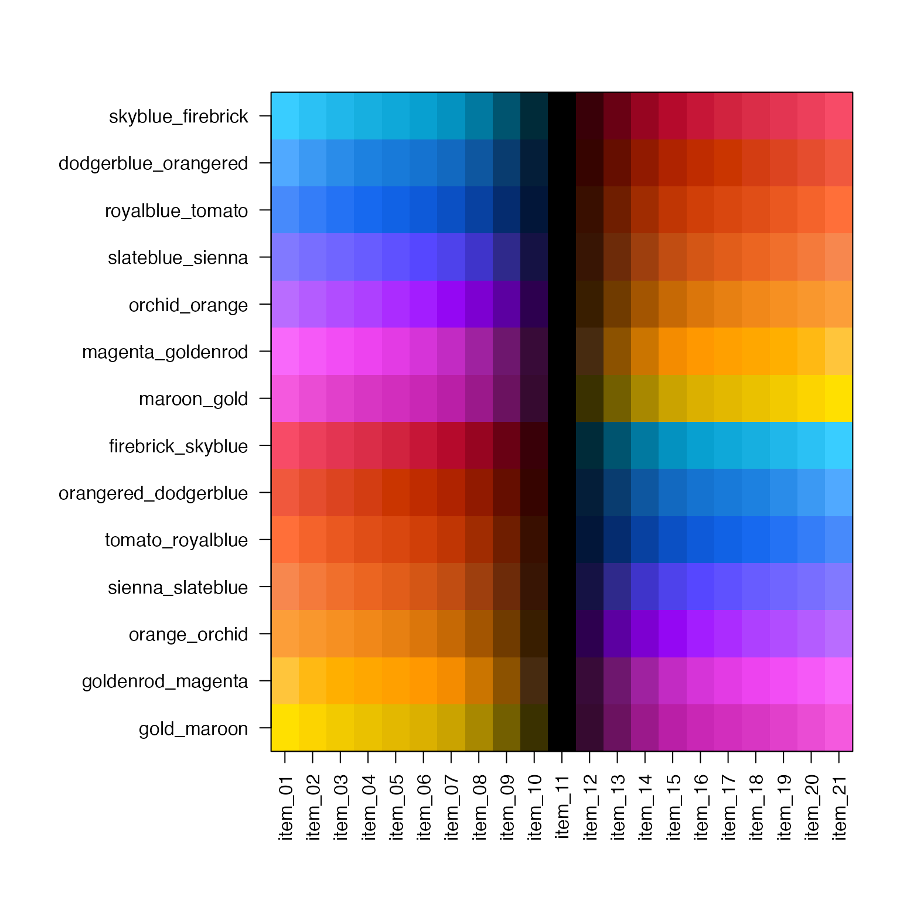
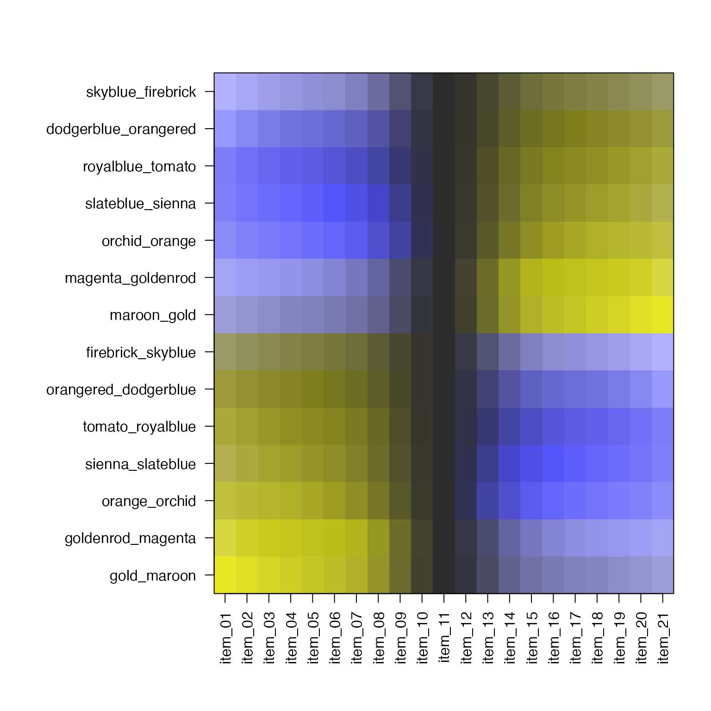

Jam Divergent Color Gradients that are color-blind-friendly.
jam_divergent
An object of class list of length 14.
This data contains a list of divergent color gradients generated
similar to jam_linear with multi-hue technique based upon
RColorBrewer. Each gradient is designed so that
the two colors are visibly distinct even under three
different color blindness simulations from dichromat::dichromat().
Each gradient is named by the closest corresponding R colors,
where the same names are used in jam_linear so that colors
can be matched where appropriate:
skyblue_firebrick
dodgerblue_orangered
royalblue_tomato
slateblue_sienna
orchid_orange
magenta_goldenrod
maroon_gold
firebrick_skyblue
orangered_dodgerblue
tomato_royalblue
sienna_slateblue
orange_orchid
goldenrod_magenta
gold_maroon
These linear gradients are designed with a white background
color.
These divergent gradients are designed with
a black background, intended to help indicate that these
colors are divergent. Note that linear gradients jam_linear
are designed with a white background color.
Other colorjam data:
jam_linear
# show the same with dichromat adjustment if (require(dichromat)) { jamba::showColors(lapply(jam_divergent, dichromat::dichromat)) }#>